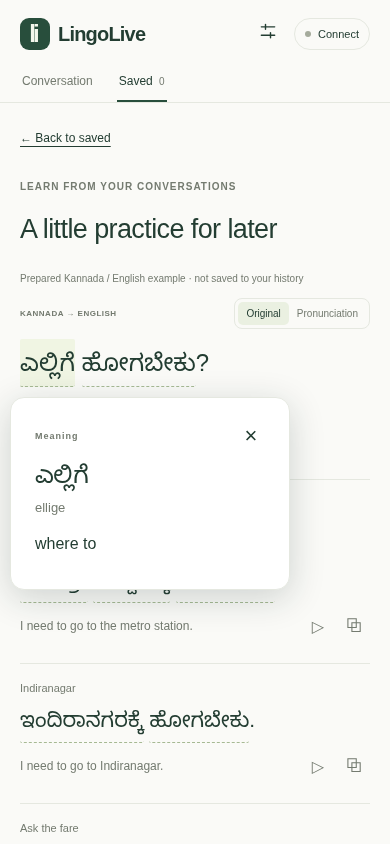

LingoLive · Project overview · 17 October 2026
Learn a language through the conversations
you are already having.
Google AICloud RunWeb + Android
Suggested social-impact category: Education
Theme alignment and eligibility to be confirmed with the event.
The problem and the experience
Learners need to understand what they heard and know what they can say next—at a café, at work or while travelling.
Select a language you understand and one you are learning. Connect with a host code or your own Google key.
See finalized speech, a translation and three suggested replies. Typed phrases work too.
Tap words for a meaning bubble, switch to pronunciation, hear or copy replies, and reopen saved learning.

Actual local web UI · prepared Japanese example
“Would you like some coffee?” · illustrative, not a new live AI result
System architecture
One HTTPS origin serves the website, authenticated audio relay and lesson API.
Microphone → AudioWorklet → mono 16 kHz PCM audio.
Interim captions stay temporary. Final phrases enter the learning queue.
Lessons and vocabulary are saved locally.
Authenticate first, then enforce request bounds, pacing, quotas and concurrent-call limits.
WebSocket carries audio; HTTP carries the text, context and optional recent sound.
Provider credentials stay server-side.
Gemini 3.5 Transcribe Live
Produces speech transcription across languages.
Gemini 3.6 Flash
Checks for the learning language and generates structured lessons and replies.
Model IDs are configured by the server. The web app uses Flash for language checking; the Android companion also uses local Google ML Kit language identification.
Context and response generation
A goal is optional. The same Flash request can infer the immediate situation and suggest ways to respond.
An explicit goal overrides a guess. New conversation clears the scene sent to Google while retaining Saved.
Learner’s goal
“I want vegetarian takeaway.”
A later question
“Will you eat here?”
A context-aware reply could be:
“To take away, please.”
Illustrative scenario. With a blank goal, the model uses the immediate exchange; conversational accuracy needs broader user testing.
Suggestions are kept separate from spoken facts. “Likely you” is a conversational estimate, not verified speaker identity. The learner can confirm “I said this.”
Memory and privacy
| Information | Storage and use | Lifetime / control |
|---|---|---|
| Saved phrases and lessons | IndexedDB in the browser; searchable words, replies and meanings | Reopen or delete in Saved; clearing site data removes them |
| Learner profile and notes | LocalStorage; separate learning namespaces on this browser | Notes are editable; profiles are not separate authenticated accounts |
| Conversation scene | Local conversation state; bounded earlier text sent with a lesson | History over 90 minutes old is excluded; New conversation resets the scene |
| Optional location | RAM only; coordinates rounded to two decimal places | Starts off; location expires after five minutes; no Maps API request |
| Optional recent sound | RAM only; up to four seconds of WAV sent alongside transcription to Flash | Starts off; no raw audio is saved in lesson history |
| API key and session cookie | Key in server RAM; cookie contains a signed opaque session identifier | Up to one hour; disconnect, expiry or server restart removes key-session access |
Access and cost controls
The private code creates a signed browser session. The recommended Cloud Run setup calls Vertex AI using the runtime service account.
Google model usage: billed to the host’s Cloud project.
A short server-memory session uses that Google AI Studio key for both transcription and Flash. Failed keys never fall back to host credentials.
Google model usage: billed to the personal key’s project.
Host-code and personal-key users have separate shared model allowances; all personal-key sessions share theirs. Both groups share infrastructure concurrency and pacing limits. The host still pays Cloud Run relay costs.
Feasibility, validation and growth
Authentication, quotas, structured lessons, PCM validation, context bounds, provider/key isolation, session expiry and revocation.
Upstream Google HTTP and WebSocket behaviour is mocked in these tests.
Real Chromium UI, cookies, IndexedDB, microphone worklet, word bubbles, memory, sensors and both connection modes.
Synthetic microphone and location fixtures; Google model responses are mocked.
Web v1.3 passed real Google transcription and a context lesson using a 2.128-second synthesized-speech fixture plus the optional WAV input.
Valid personal-key inference, physical-phone capture and broad language/speaker accuracy remain unverified.
Prototype links and submission handoff
Web v1.3: use the host’s private code or your own Google AI Studio key. No credentials are included here.
Repository was private at publication. Judges need repository access, or the owner must change visibility.
This English PDF provides the project explanation and proposed impact. No demo video or completed hackathon submission is claimed.